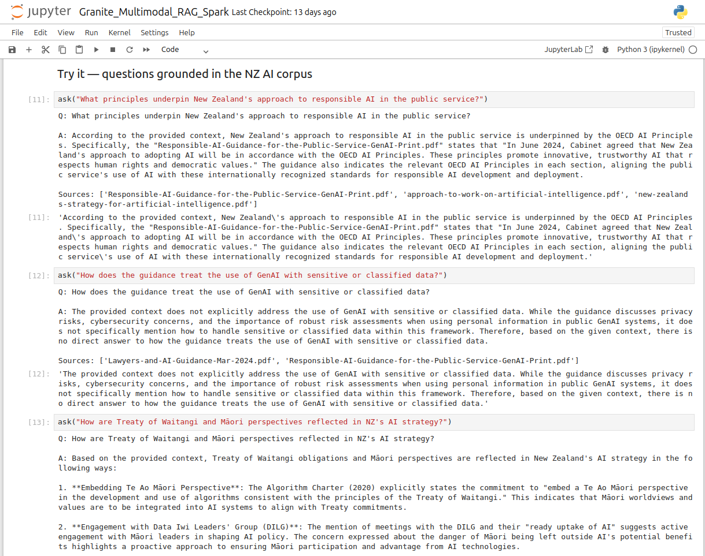
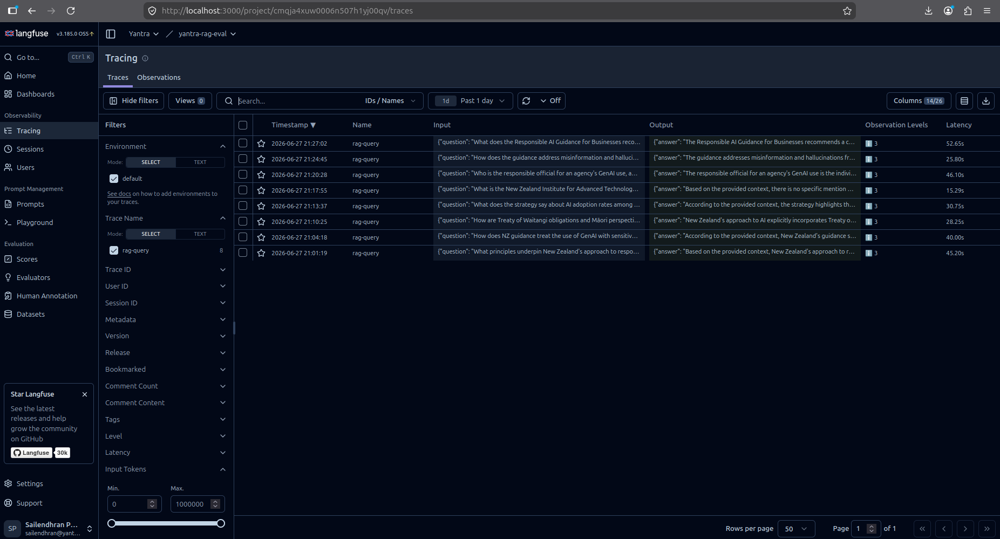
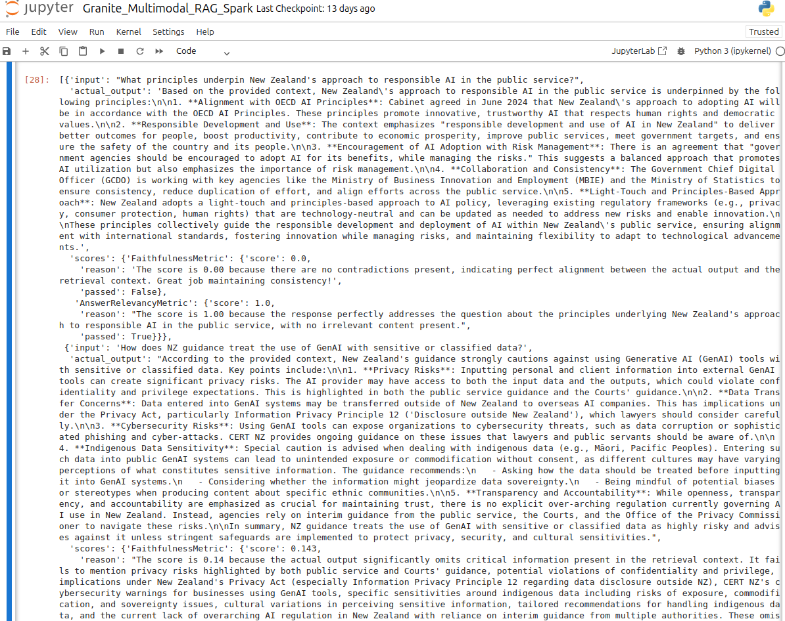

An AI that reads government policy without the data ever leaving the room.
We built a multimodal retrieval system over New Zealand's public-sector AI documents — ingestion, reasoning, tracing, and evaluation — running end to end on a single desktop machine. No external API. No data residency question to answer, because the data never moves.
The whole system, inside one boundary
In the public sector, "where does the data go?" is the first question — and often the last.
Generative AI is moving fast in New Zealand government, but most of the obvious tools route sensitive data through third-party clouds. For agencies like Health NZ or a council handling residents' information, that single fact can stop a project before it starts. Data residency isn't a preference; it's frequently a procurement requirement.
So we set ourselves a constraint and treated it as the design: build a capable, modern RAG system — multimodal ingestion, a large generation model, full observability, real evaluation — where no document content ever leaves the machine. If it works on a desktop, the data-residency conversation is over before it begins.
A full pipeline on a single GB10 desktop.
The corpus is real: New Zealand's Strategy for Artificial Intelligence, the Responsible AI Guidance for the Public Service, the Algorithm Charter, and supporting cabinet material. These are figure-heavy policy PDFs, so text-only ingestion would throw away half the meaning.
Docling parses each document into text, tables, and images; a local Granite vision model describes the diagrams so they become searchable too. Everything is embedded with a multilingual Granite model — deliberately chosen so te reo Māori terms like Te Ao Māori and Treaty concepts retrieve correctly — and stored in ChromaDB. At query time, the most relevant passages are handed to Granite 4.1 30B, which answers grounded strictly in what was retrieved, and cites its sources.
| Hardware | NVIDIA DGX Spark · GB10 · 128 GB unified memory |
| Model serving | Ollama (fully local) |
| Generation | IBM Granite 4.1 30B |
| Vision | IBM Granite 3.2 Vision |
| Embeddings | Granite multilingual (te reo Māori coverage) |
| Parsing · Store | Docling · ChromaDB |
| Observability | Langfuse (self-hosted) |
| Evaluation | DeepEval (local judge) |

A black box can't be trusted with public data. So we opened it.
Every query is traced in a self-hosted Langfuse dashboard — itself running on the same machine. Each trace breaks the query into its stages: what was asked, which documents came back and how fast, the exact prompt sent to the model, the answer, and token usage. When something looks wrong, the trace shows which stage was responsible.

"It answers questions" is a demo. Scores make it a system.
We score answer quality with DeepEval, using the local Granite model as the judge — so even evaluation stays on-device. Two checks need no answer key: Faithfulness (does the answer stay within the retrieved context, or does it invent?) and Answer Relevancy (does it actually address the question?). With a curated set of known-good answers, two more kick in — Contextual Recall and Precision — which measure whether retrieval fetched the right material in the first place.

The judge is itself a language model, so its scores are a strong signal — not gospel. That's exactly why a human-verified set of reference answers matters: it anchors the evaluation to answers a person actually checked, and keeps results comparable as the system changes.
Data sovereignty stops being a compromise.
The usual trade-off — modern AI capability or keeping data in the country — turns out to be a false one. A single GB10 desktop runs a 30-billion-parameter model alongside a vision model, with tracing and evaluation, over real government documents, and never opens a connection to the outside world. For NZ agencies where residency is non-negotiable, that changes what's possible to procure.
And it's reusable. Point the same pipeline at a different set of documents — a council's records, a health provider's policies, an agency's archive — and you have a grounded, auditable assistant over that corpus, running on hardware that fits under a desk.
Exploring on-prem AI for sensitive data?
Yantra builds data-sovereign AI systems for New Zealand's public sector and enterprise. If residency, auditability, and real evaluation matter to your project, let's talk.
Start a conversation →